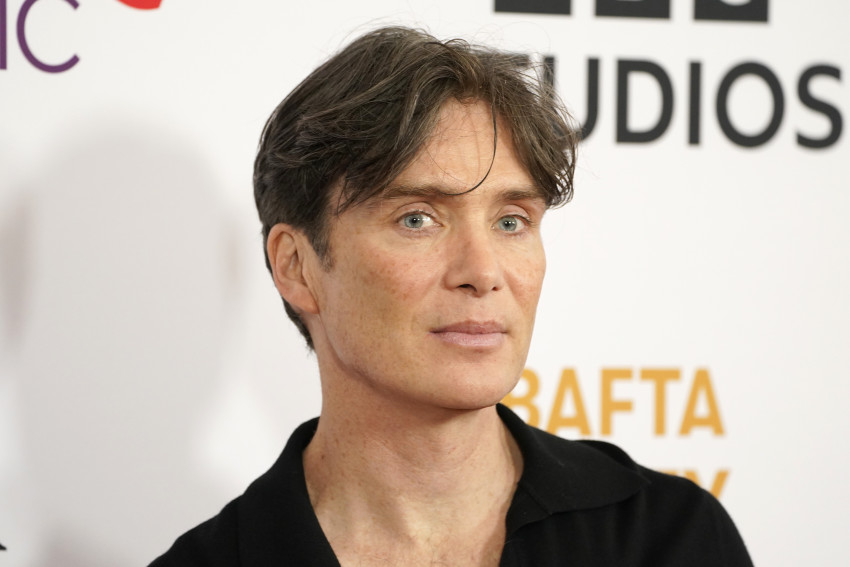

'Oppenheimer' and 'Poor Things' lead race for Britain's BAFTA film awards
Atom-bomb epic “Oppenheimer” leads the race for the British Academy Film Awards, with nominations in 13 categories including best film — eight more than its box-office rival, “Barbie.”
Gothic fantasia “Poor Things” received 11 nominations on the list announced Thursday, while historical epic “Killers of the Flower Moon” and Holocaust drama “ The Zone of Interest” had nine each.
Other leading contenders include French courtroom drama “Anatomy of a Fall,” boarding school comedy “The Holdovers” and Leonard Bernstein biopic “Maestro,” with seven nominations each. Grief-flecked love story “All of Us Strangers” was nominated in six categories and class-war dramedy “Saltburn ” in five.
“ Barbie,” one half of 2023’s “Barbenheimer” box office juggernaut, also got five nominations, but missed out on nods for best picture and best director.
The winners will be announced at a Feb. 18 ceremony at London’s Royal Festival Hall hosted by “Doctor Who” star David Tennant.
The prizes — officially called the EE BAFTA Film Awards — are Britain’s equivalent of Hollywood’s Academy Awards and will be watched closely for hints of who may win at the Oscars on March 10.
The best film race pits “Oppenheimer” against “Poor Things,” “Killers of the Flower Moon,” “Anatomy of a Fall” and “The Holdovers.”
“Poor Things” is also on the 10-strong list for the separate category of best British film, an eclectic slate that includes “Saltburn,” imperial epic “Napoleon,” south London romcom “Rye Lane” and chocolatier origin story “Wonka,” among others.
The best leading actor nominees are Bradley Cooper for “Maestro,” Colman Domingo for “Rustin,” Paul Giamatti for “The Holdovers,” Barry Keoghan for “Saltburn," Teo Yoo for “Past Lives” and Cillian Murphy for “Oppenheimer.”
“Oppenheimer” also received nominations for supporting performers Emily Blunt and Robert Downey Jr., as well as for Christopher Nolan's direction and screenplay.
“I couldn’t be happier that the British Academy recognized so many of my collaborators on ‘Oppenheimer,’ especially Chris Nolan," Murphy said. “Working on the film was an experience I’ll never forget."
The best leading actress contenders are Fantasia Barrino for “The Color Purple,” Sandra Hüller for “Anatomy of a Fall,” Carey Mulligan for “Maestro,” Vivian Oparah for “Rye Lane,” Margot Robbie for “Barbie” and Emma Stone for “Poor Things.”
Harrowing Ukraine war documentary “20 Days in Mariupol,” produced by The Associated Press and PBS “Frontline,” is nominated for best documentary and best film not in the English language.
Britain’s film academy introduced changes to increase the awards’ diversity in 2020, when no women were nominated as best director for the seventh year running and all 20 nominees in the lead and supporting performer categories were white.
The voting process was rejigged to add a longlist round in the selection before the final nominees are voted on by the academy’s 8,000-strong membership of industry professionals.
Under the new rules, the director longlist had equal numbers of male and female filmmakers, but there is only one woman among the six best-director nominees, Justine Triet for “Anatomy of a Fall.” She is up against Andrew Haigh for “All of Us Strangers,” Alexander Payne for “The Holdovers,” Bradley Cooper for “Maestro,” Christopher Nolan for “Oppenheimer” and Jonathan Glazer for “The Zone of Interest.” “Barbie” director Greta Gerwig was a notable omission, as was “Saltburn”'s Emerald Fennell.